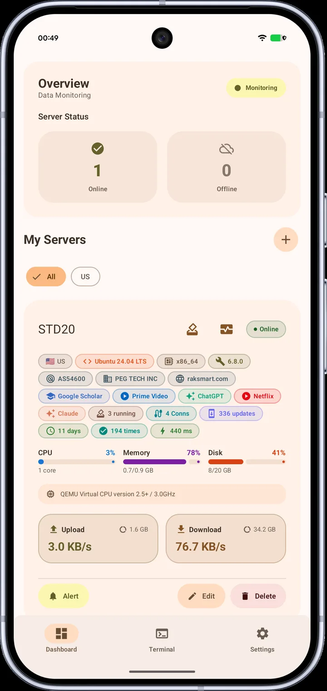
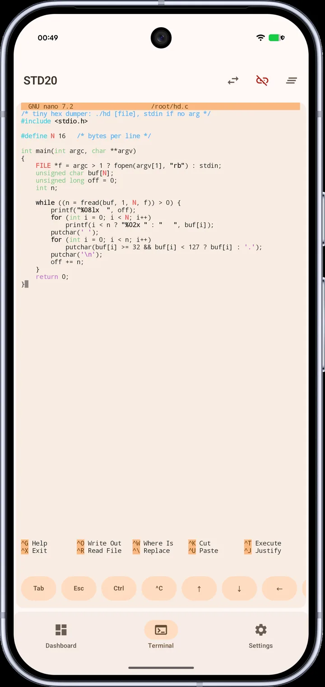
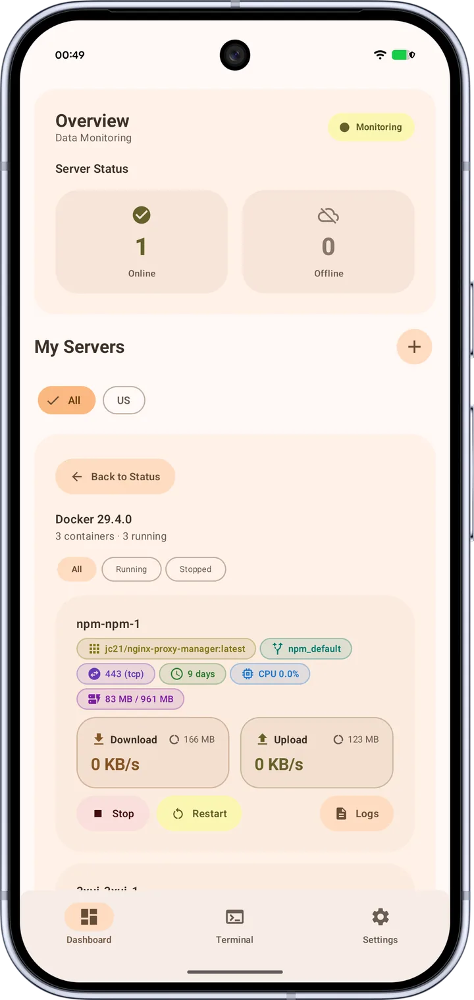
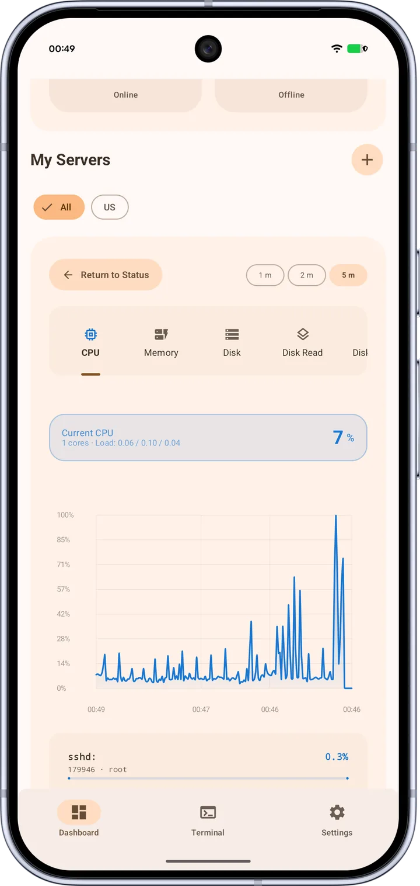
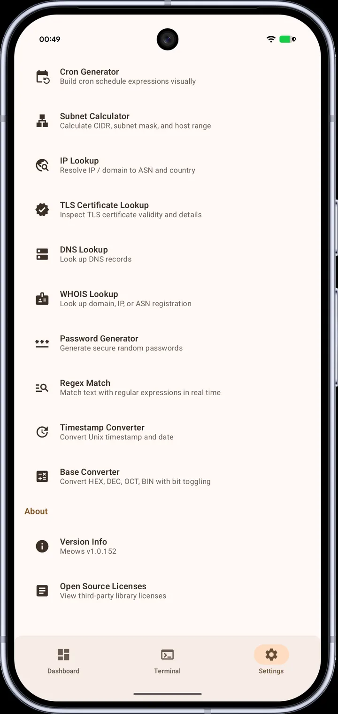

Meows
MeowsYour servers, in your pocket.
Native Android SSH monitoring. Fill in an IP and you are watching your VPS. Nothing installed on the server.
 $4.99 · one-time, no subscription
$4.99 · one-time, no subscription

Everything you need to keep an eye on a box
No agent, no daemon, no third-party relay. Your phone talks to your servers directly over SSH.
Nothing on your server
Add an IP plus a password or private key. Meows reads standard interfaces over SSH: no agent, no daemon, no config. Any server you can SSH into, it can monitor.
Live metrics, history & alerts
CPU, memory, disk, network and TCP connections, refreshed live, each with history charts and a breakdown of the top processes, mounts and interfaces. Cross a threshold or drop offline, and your phone gets a notification.
A real terminal
A hand-written ANSI engine with semantic coloring. nano, vim and htop just work. Colors follow your system theme, not plain white-on-black.
Docker, over SSH
Start, stop and restart containers and tail live logs, again over SSH, with no remote API port to expose.
Network toolbox
TLS certificate, DNS, WHOIS and IP/ASN lookup: dig, openssl and whois in your pocket. Plus subnet, cron, regex and more.
Private by design
Credentials are encrypted with AES-GCM via Android Keystore and never leave your phone. One permission (notifications), and you can deny even that. No telemetry, no ads.
Built natively, polished by hand




Questions, answered
Do I need to install anything on the server?
No. Add an IP with a password or private key, and Meows reads everything over standard SSH: no agent, no daemon, no config, and nothing to expose to a third party.
Are my passwords and keys safe? Do they go to the cloud?
They are encrypted with AES-GCM in the Android Keystore and stay on your phone, never uploaded to any server, and a stolen database still can't be decrypted. Optional Google Drive backup uploads them only after a second layer of encryption with your master password.
Is it a one-time purchase or a subscription?
One-time, $4.99. No subscription, no in-app purchases, no ads, and updates stay free.
It says "device not compatible" or "uncertified". What can I do?
That is Google Play's device-certification policy, not a Meows restriction. Keystore hardware encryption can't be guaranteed on an uncertified device. If your bootloader is unlocked, add the app to your library from a desktop browser first, then install it on your phone.
Is there an iOS version?
Not for now. Meows is Android only.
Which key formats are supported, and what if a key won't connect?
RSA, ED25519 and ECDSA. If a key won't connect, check for stray blank lines or spaces in the pasted key, and include the passphrase if it has one.
Can I monitor a server with no public IP?
Yes. Set up a bastion (jump) host, and the connection goes phone → bastion → internal machine. Monitoring, terminal and tunnels all work through it.
One-time purchase. Free updates.
Buy it once, use it for good. No subscription, no in-app purchases, no ads. Google Play refunds within 2 hours, so try it risk-free.